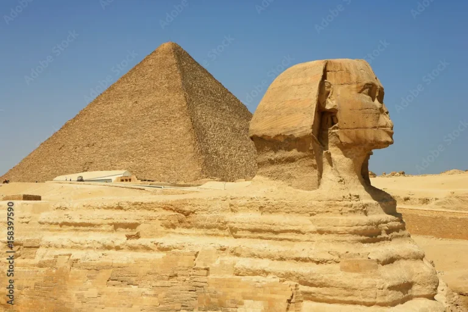
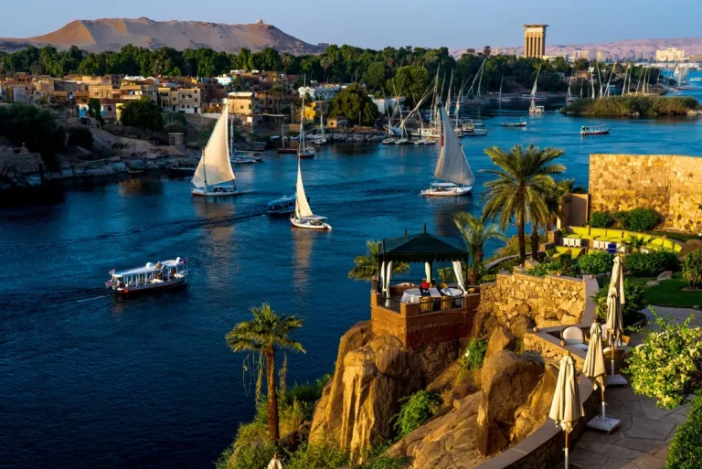
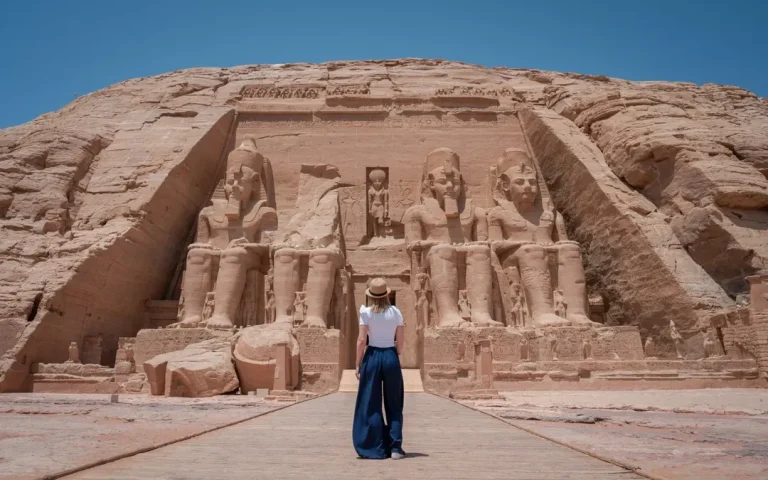
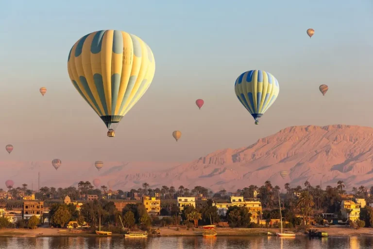
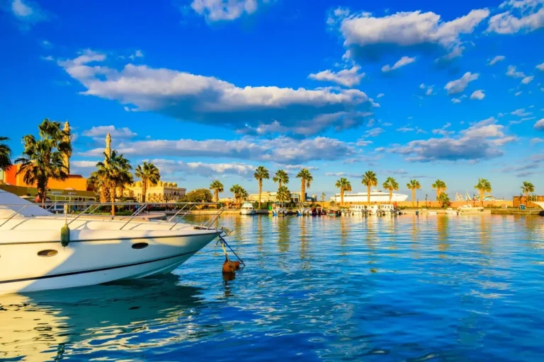

Uma das principais razões para visitar o Egito é conhecer de perto as incríveis maravilhas do mundo antigo. As Pirâmides de Gizé, incluindo a grande Pirâmide de Quéops e as Pirâmides de Quéfren e Miquerinos, além da misteriosa Esfinge, são testemunhos impressionantes da grandiosidade e engenhosidade dos antigos egípcios.
Embarcar em um cruzeiro pelo Rio Nilo é uma experiência única. Você poderá explorar antigas ruínas, vilarejos tradicionais e a exuberante paisagem ribeirinha enquanto relaxa em um ambiente luxuoso e confortável, isso sem falar na oportunidade de encontrar pelas paradas no caminho lojinhas com artesanatos únicos que refletem a cultura egípcia e a culinária local espetacular.
O Templo de Abu Simbel é um dos maiores e mais imponentes do Egito. Construído pelo faraó Ramsés II, este impressionante complexo é um testemunho da grandiosidade e da arte egípcia antiga. Aqui, além de se deparar com as impressionantes estátuas dedicadas a antigos deuses egípcios, você também terá a oportunidade de se maravilhar com uma arquitetura e engenharia extremamente detalhadas, conhecendo de perto todo o grupo de edificações que contemplam o templo.
Já imaginou ver os templos, pirâmides, rios e o deserto de uma das mais importantes civilizações da história mundial diretamente do céu? Um dos passeios mais emocionantes que você pode fazer no Egito é um voo de balão sobre o Luxor e o Vale dos Reis. Ao nascer do sol, você terá uma vista deslumbrante desses locais históricos, criando memórias inesquecíveis.
Para quem busca relaxamento e paisagens deslumbrantes, o litoral de Hurghada, às margens do Mar Vermelho, é o lugar perfeito. Com suas águas cristalinas e recifes de corais, é um paraíso para os amantes do mar. Aqui você pode realizar mergulho e snorkeling, passear de barco ao redor das ilhas próximas, pesca, esportes aquáticos e muito mais!
